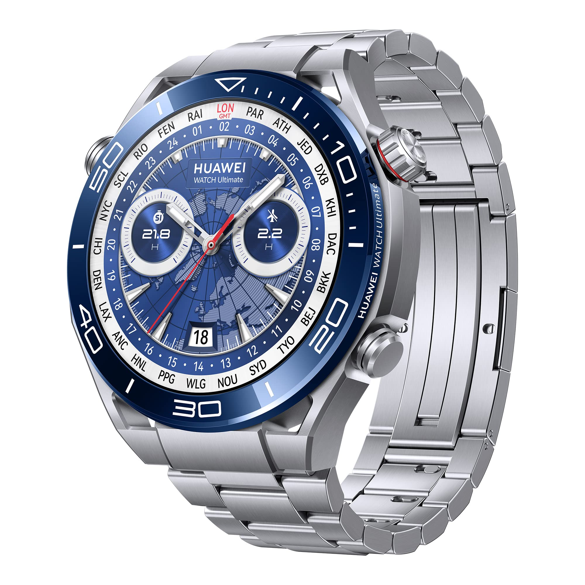

Huawei Watch Ultimate
Precio: $899.90
La caja del reloj es muy grande, está fabricada en metal líquido con base de circonio, el cristal sobre la pantalla es de zafiro (con un grosor de 2,35 mm) y tanto la parte trasera como el bisel están fabricados en cerámica. Este conjunto de gran resistencia se ve rematado con tres botones: dos en el lado derecho (el superior incluye una corona giratoria) y un tercero en el izquierdo. Dicho botón es el del modo de expedición: basta con pulsarlo para que el Huawei Watch Ultimate registre la ubicación permitiendo la vuelta al lugar de partida en caso necesario.